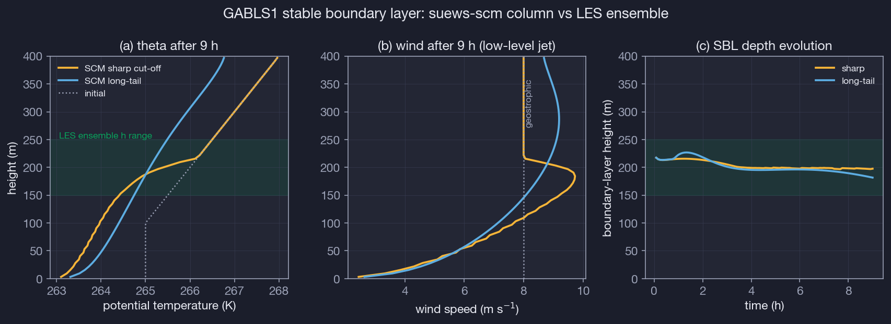
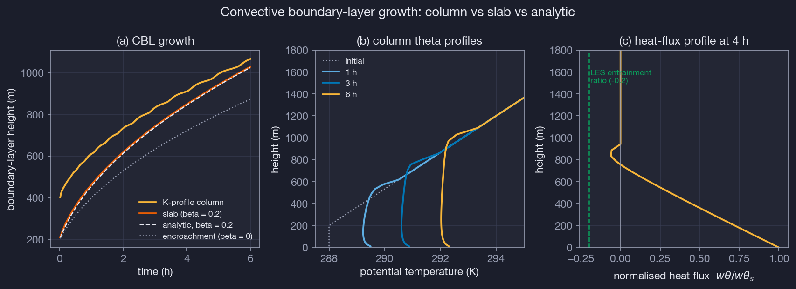
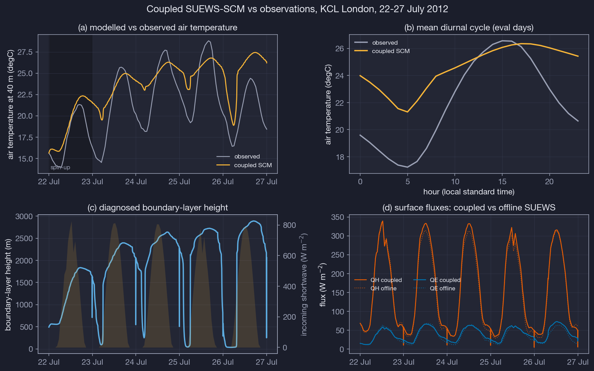
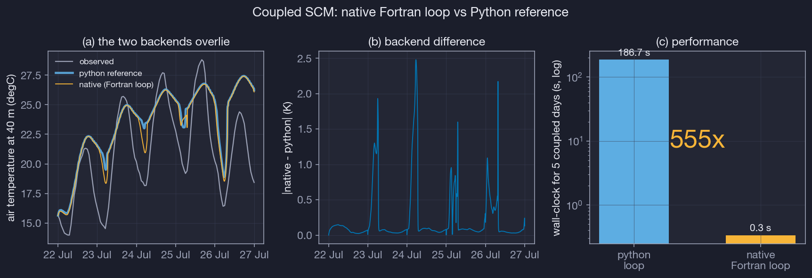
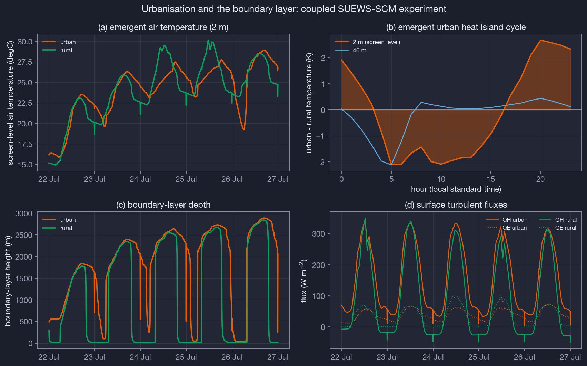
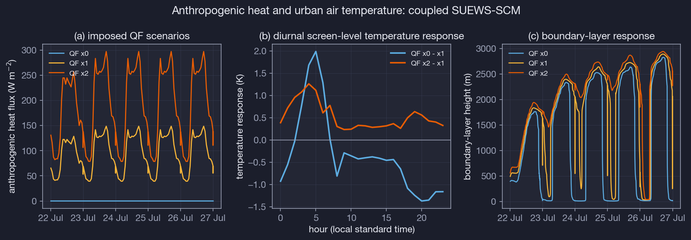
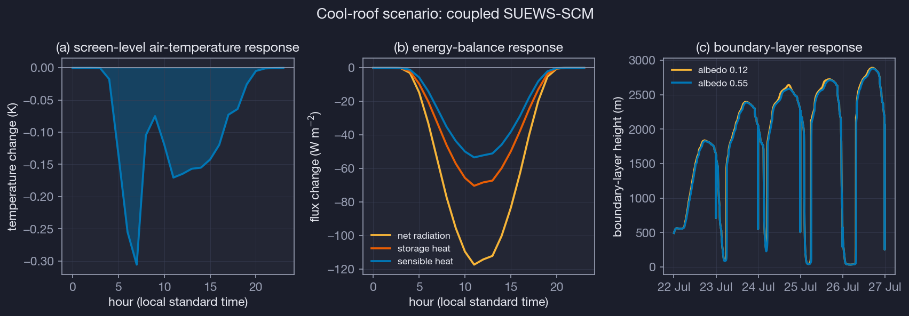
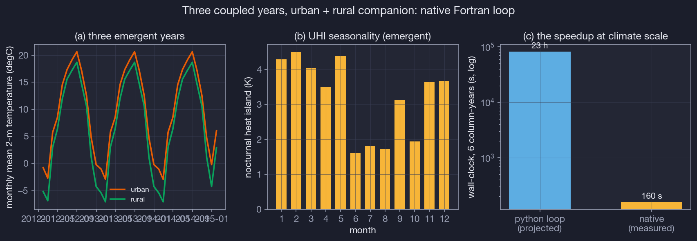

Research previewAn experimental SUEWS capability: the physics ships in the model core;
the interface may still change. Every number on this page regenerates from
archived, version-controlled metrics.Documentation ·
Source
single-column model · urban land–atmosphere coupling
A single column of urban air
Offline, SUEWS is told what the air above a city is doing. the SUEWS
single-column model
closes the loop: a one-dimensional atmospheric boundary-layer column rides on the
SUEWS surface scheme, so air temperature, humidity and boundary-layer depth become
things the model predicts — and urban climate questions at the city scale
can be asked of a system that answers back.
I · The coupled system
The surface and the air, made to negotiate
Every five minutes the column hands SUEWS the air it has computed at the forcing
height — temperature, humidity, wind — and SUEWS hands back the turbulent fluxes
of the urban surface: sensible heat, latent heat and friction velocity. The fluxes
drive the column; the column rewrites the forcing. Radiation, precipitation and
pressure stay prescribed from observations, so the coupled system remains anchored
to the real sky.
A column fixed over a city is not a closed box. Advection replaces urban-heated
air with upstream air on a time scale of roughly an hour; without that exchange the
modelled city warms without limit, because an urban surface keeps a positive
sensible heat flux all night. The model represents this with a
companion rural column — itself a coupled SUEWS run over grassland,
cooling at night through its own surface — whose profiles ventilate the urban
column at the rate the wind dictates.
K-profile column.
Multi-level boundary layer with the Troen–Mahrt non-local closure for convective
conditions (counter-gradient transport after Holtslag & Boville) and a local
Richardson-number closure for stable nights. Implicit, exactly conservative numerics.
Slab mixed layer.
A CLASS-style bulk convective boundary layer — the modern descendant of the
SUEWS-CBL (BLUEWS) scheme that still ships in the Fortran code — for theory work
and rapid experiments.
Two-way coupler.
The coupled loop runs inside the SUEWS timestep driver itself (Fortran,
reached through the Rust bridge): fluxes exchanged both ways every five
minutes, wind nudged to observations, rural-background ventilation with
τ = L/U — about 0.25 ms per coupled step.
II · Evidence
Benchmarked against what the literature already knows
A model earns trust by being checked where the answer is known. Three layers of
evidence: exact analytic solutions, the canonical GABLS1 large-eddy-simulation
ensemble, and observed air temperatures over central London. All numbers below are
regenerated by the scripts in § IV; nothing is hand-tuned to fit.

GABLS1 stable boundary layer after 9 h of prescribed surface cooling.
Green band: LES ensemble depth range (Beare et al. 2006). The long-tail stability
function over-deepens the layer exactly as the SCM intercomparison reported.
GABLS1 — the stable night
The standard test of a boundary-layer scheme's worst enemy: weak, shallow,
stably stratified turbulence under 8 m s−1 geostrophic wind.
Depth (stress-based / bulk-Ri)
168 / 198 mLES ensemble 150–250 m
Friction velocity
0.274 m s⁻¹LES ≈ 0.25–0.30 m s⁻¹
Low-level jet
9.7 m s⁻¹ at 184 msupergeostrophic, at BL top
Long-tail variant depth
378 mover-deepening reproduced (Cuxart et al. 2006)
Within the published LES ranges on every diagnostic.

Dry convective boundary layer under constant surface heat flux.
The column and the slab track the analytic entrainment growth law; the heat-flux
profile decreases linearly with height as theory requires.
Convective growth — the textbook day
Constant heat flux into linear stratification has a closed-form solution
(Tennekes 1973). The model has nowhere to hide.
Column depth at 6 h
1065 manalytic (β = 0.2): 1024 m → 4.0 %
Slab depth at 6 h
1027 m0.3 % from analytic
Mixed-layer θ
± 0.5 Kvs bulk heat-budget theory (tested)
Flux-profile entrainment ratio
0.06LES consensus 0.15–0.25 — see § V
Growth law captured to 4 % (column) and 0.3 % (slab).
The shallow entrainment minimum is a known limitation of
first-order K-profile schemes without an explicit entrainment closure (Noh et al. 2003);
it is reported, not hidden.

Coupled run over the clearest 2012 summer window at the KCL site,
central London. The temperature SUEWS receives is the column's own — the
observation curve is never shown to the model after initialisation.
London, observed — the real city
SUEWS spun up over 2012, then five July days fully coupled: the model's 40-m air
temperature against the observations the offline model would normally consume.
Air temperature RMSE
3.7 K22–27 Jul 2012, day 1 excluded (spin-up)
Daytime / nighttime RMSE
3.0 / 4.5 K
Bias
+2.6 K
Diurnal amplitude (obs / model)
7.7 / 4.2 K
Ventilation time scale (mean)
82 minτ = 15 km / U
The coupled system tracks the diurnal swing without ever seeing the observations - the residual warm bias is the column's, not a tuned fit.

The same five coupled days through both backends. The native
run executes the entire coupled loop inside the SUEWS Fortran driver via
the Rust bridge; the Python reference calls SUEWS once per 5-minute step.
Native backend — the same physics, 555× faster
The column was ported line-for-line into the SUEWS Fortran core
(suews_phys_scm.f95)
and the coupled loop now runs inside the model's own timestep driver,
reached through the Rust bridge in a single call. The Python package
remains the validated reference; cross-backend regression tests pin
the two together.
Five coupled days, native
0.3 s0.2 ms per coupled step
Five coupled days, Python loop
187 s130 ms per step (marshalling-bound)
Speed-up
555×same machine, same compiled physics
Backend agreement (air T)
0.23 K meanmax 2.48 K over 5 days; lockstep to 0.06 K over 6 h (tested) — divergence reflects independent spin-up paths, not physics
Skill vs observations
3.4 / 3.7 KRMSE, native / Python reference
A season of coupled simulation is now a coffee-length job, not an overnight one.
III · Experiments
Questions you can only ask a coupled model
Three experiments over the same five July days, identical synoptic forcing. In each,
the quantity of interest — the heat island, the warming from waste heat, the cooling
from brighter roofs — emerges from the negotiation between surface and air.
An offline model cannot produce any of these numbers: it would change the fluxes and
leave the air untouched.

Central London (KCL) versus a grassland configuration. The urban–rural
temperature difference is an output, not an input.
1 · The heat island, grown from physics
Swap the surface beneath the column — keep the sky. The city stays warm at night
because its fabric releases stored heat and its sensible heat flux never sleeps.
Nocturnal heat island (mean)
+0.79 K
Maximum heat island
3.42 K
BL depth, urban / rural max
2890 / 2843 m

Järvi et al. (2011) anthropogenic-heat coefficients scaled by 0, 1 and 2.
2 · The price of waste heat
Switch the city's metabolism off, or double it. The atmosphere integrates the
change and pays it back mostly at night, when the boundary layer is shallow and
has nowhere to put the heat.
Mean QF (present day)
97 W m⁻²
Removing QF cools nights by
+0.08 K
Doubling QF warms nights by
+0.78 K

Building-facet albedo raised from 0.12 to 0.55. SUEWS's bulk facet
aggregates roofs and walls, so this is an upper-bound scenario.
3 · Do cool roofs cool the air?
Reflecting sunlight at the surface is only half the story; the question is what
the boundary layer does with the energy it no longer receives.
Daytime air-temperature change
-0.14 K
Peak cooling
-3.06 K
Net radiation change (daytime)
-69 W m⁻²
BL depth, base / cool max
2890 / 2880 m

Three coupled years (the 2012 KCL forcing recycled as 2012–2014),
urban column plus its rural companion — six column-years of fully coupled
simulation through the native Fortran loop.
4 · Three years, 160 seconds
This is what the 555× buys: boundary-layer climatology.
The seasonal cycles of the heat island and of boundary-layer depth emerge
from six column-years of surface–air negotiation that the Python loop
would have needed a day of compute to produce. For multi-season stability
the long-tail closure is used and the rural companion is synoptically
anchored to the observed air state (τ = 24 h) — the urban column stays
fully prognostic.
Six column-years, native
160 smeasured; Python loop projected 23 h at its measured 130 ms/step
Simulation pace
2.2 yr min⁻¹coupled column-years per wall-clock minute
Nocturnal UHI, summer / winter
+1.72 / +4.14 KJJA / DJF means at screen level, emergent
Daily max BL depth, summer / winter
1549 / 574 murban column, JJA / DJF means
Caveats: the three years repeat 2012's weather, so
interannual variability here measures the coupled system's internal state
memory, not the climate's; and the synoptic anchor draws on observations
made at an urban site, so the rural reference is conservative — both are
design choices of the demonstrator, stated rather than hidden.
IV · In your hands
What a column knows that a flat model cannot
A vanilla land-surface model carries one air temperature, at one height, handed to it
from a file. Everything below — a boundary layer you can steer, and five days of real
coupled vertical structure — is state that simply does not exist in an offline model.
Both panels run live in your browser; the first integrates the same CLASS slab equations the benchmark campaign
validated against analytic theory.
peak depth–day's warming–heat diluted through–
Steer a boundary layer
The CLASS slab equations (Tennekes 1973) integrated live, 06:00–20:00.
Push the city's sensible heat up and watch the air answer: a deeper, warmer
boundary layer. An offline model would change the flux — and stop.
Grey curves: the default city for comparison.
The same equations pass this page's analytic benchmarks to 0.3 %.
Five days of vertical structure
Real output from the native three-year run: hourly θ(z) for the urban
(gold) and rural (green) columns through the July 2012 heat spell. Watch the
mixed layer grow each morning, the inversion sharpen, the night reset —
and the urban column stay warmer aloft after dark.
This entire panel is invisible to an offline model. Its
atmosphere is a single number per variable at a single height; it cannot
tell you how deep the city's influence reaches, only what happens at the ground.
–
boundary layer–urban 2-m temperature–
V · Run it
One import, in the released core
# the coupled loop runs inside the compiled SUEWS core (Fortran via# the Rust bridge); Python only marshals. Research preview interface.import supy as sp
from supy.scm import run_scm, make_rural_config, make_background, tile_forcing
from supy.data_model import SUEWSConfig
config = SUEWSConfig.from_yaml("config.yml")
df_state, df_forcing = sp.load_sample_data()
# rural companion provides the ventilating background air ...
rural = make_rural_config(config)
_, _, snaps, _ = run_scm(rural, df_forcing, snapshot_every_h=1.0,
obs_anchor_tau=86400.0, stable_fn=1)
# ... and the urban column negotiates with its own atmosphere
df_output, df_scm, state = run_scm(config, df_forcing,
background=make_background(snaps), stable_fn=1)
Full scientific description, options and provenance:
the documentation page.
The archived validation metrics live under
test/fixtures/scm/
in the repository; the pure-Python reference implementation that produced the
benchmark campaign (and its 26-test suite) is retained in git history — every
figure above carries that lineage rather than being a one-off artefact.
VI · Honest limitations
What a single column cannot tell you
One column is one city: sea breezes, heterogeneity and synoptic change enter only through the prescribed radiation and the ventilation term.
The ventilating background air is modelled (a rural companion run), not observed; the advective time scale uses a single 15 km city-length scale.
Entrainment at the convective boundary-layer top is under-represented (flux-ratio 0.06 vs 0.15–0.25 from LES); afternoon mixed-layer warming may be slightly underestimated.
Wind is constrained by observations in coupled-verification mode; momentum is only fully prognostic in idealised experiments.
SUEWS's bulk building facet aggregates roofs and walls — facet-albedo scenarios are upper bounds.
VII · References
Sources
Beare R. J. et al. (2006) An intercomparison of large-eddy simulations of the stable boundary layer. Boundary-Layer Meteorol.
Cuxart J. et al. (2006) Single-column model intercomparison for a stably stratified atmospheric boundary layer. Boundary-Layer Meteorol.
Garratt J. R. (1992) The Atmospheric Boundary Layer. Cambridge University Press.
Holtslag A. A. M. & Boville B. A. (1993) Local versus nonlocal boundary-layer diffusion in a global climate model. J. Climate.
Järvi L., Grimmond C. S. B. & Christen A. (2011) The Surface Urban Energy and Water Balance Scheme (SUEWS): evaluation in Los Angeles and Vancouver. J. Hydrol.
Noh Y. et al. (2003) Improvement of the K-profile model for the planetary boundary layer based on large eddy simulation data. Boundary-Layer Meteorol.
Onomura S. et al. (2015) Meteorological forcing data for urban outdoor thermal comfort models from a coupled convective boundary layer and surface energy balance scheme. Urban Climate 11, 1–23.
Sullivan P. P. et al. (1998) Structure of the entrainment zone capping the convective atmospheric boundary layer. J. Atmos. Sci.
Tennekes H. (1973) A model for the dynamics of the inversion above a convective boundary layer. J. Atmos. Sci.
Troen I. & Mahrt L. (1986) A simple model of the atmospheric boundary layer; sensitivity to surface evaporation. Boundary-Layer Meteorol.
Vilà-Guerau de Arellano J. et al. (2015) Atmospheric Boundary Layer: Integrating Air Chemistry and Land Interactions. Cambridge University Press.
Vogelezang D. H. P. & Holtslag A. A. M. (1996) Evaluation and model impacts of alternative boundary-layer height formulations. Boundary-Layer Meteorol.